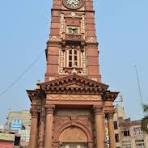
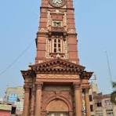

Advantages
- Cost Of Living: Compared to other major cities in Pakistan, the cost of living in Faisalabad is relatively low, making it a popular destination for those looking to stretch their budget.
- Tourist Attractions: Faisalabad is a popular tourist attraction, with many popular attractions such as the Museum of Modern Art, the Museum of Modern Art, the Museum of Modern Art, the Museum of Modern Art, the Museum of Modern Art, the Museum of Modern Art, the Museum of Modern Art, the Museum of Modern Art, the Museum of Modern Art,
- Rich Cultural Heritage: Faisalabad has a rich cultural heritage, with many historical landmarks and monuments that reflect the city's rich history.
- Economy: Faisalabad is a major hub for textile production, and it is also home to many other industries, such as food processing and pharmaceuticals. The city's economy is growing and providing ample employment opportunities.
- Good Transportation: Faisalabad is well-connected to other parts of the country through a network of roads, highways, and railways, making it easy for residents to travel to and from the city.
Disadvantages
- Traffic Congestion: Despite good transportation facilities, traffic congestion can be a problem in Faisalabad, particularly during peak hours.
- Limited Recreational Options: While Faisalabad does have some parks and other recreational facilities, there are limited options compared to other major cities in Pakistan.
- Poor Air Quality: The city's growing industrial sector has led to increased pollution, and the air quality in Faisalabad can be poor at times.
- Access To Quality Healthcare: While there are some good hospitals in Faisalabad, access to quality healthcare can be limited for many residents, particularly those living in rural areas.
Faisalabad Video Intro
Wahab